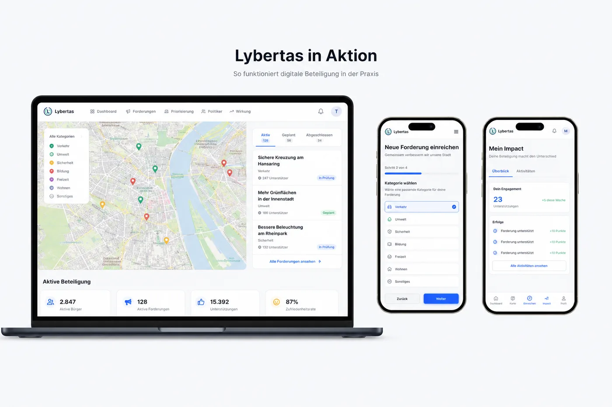
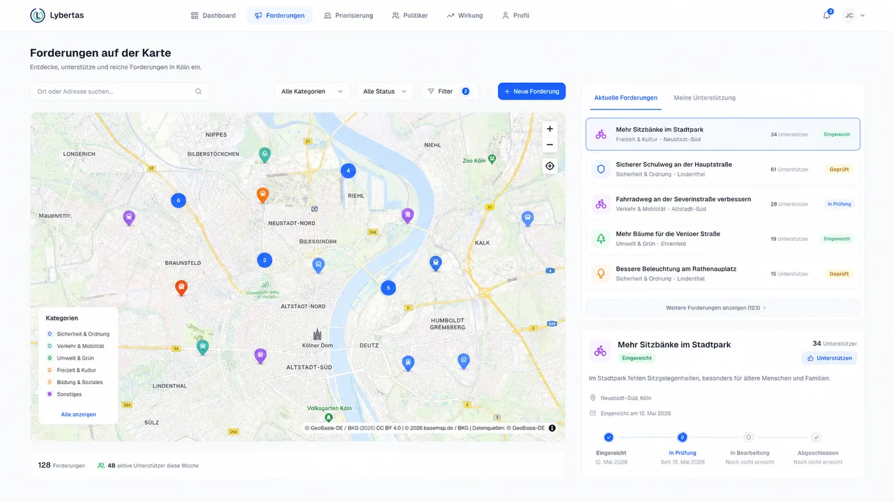
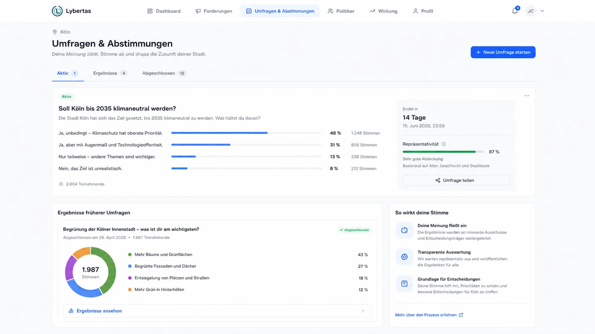
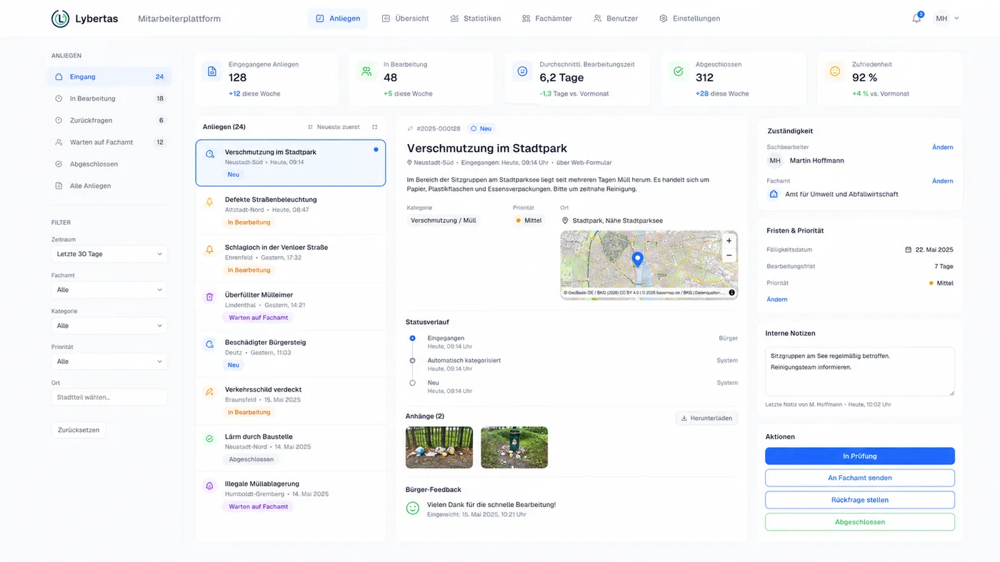
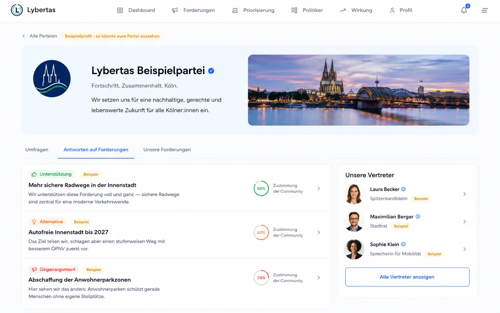

Stadtverwaltung
Anliegen strukturiert erfassen, bearbeiten und beantworten – mit einer eigenen Mitarbeiterplattform statt E-Mail-Chaos.
Anliegen, Umfragen, Karten und direkter Dialog – digital verbunden in einer kommunalen Plattform.

Verwaltung, Politik und Bürgerinnen und Bürger arbeiten heute oft aneinander vorbei. Lybertas bringt sie zusammen – transparent, nachvollziehbar und auf Augenhöhe.
Anliegen strukturiert erfassen, bearbeiten und beantworten – mit einer eigenen Mitarbeiterplattform statt E-Mail-Chaos.
Sehen, was Menschen vor Ort wirklich bewegt – mit belastbaren Daten aus Umfragen, Abstimmungen und Forderungen.
Niedrigschwellig mitgestalten: Mängel melden, abstimmen, sich austauschen – direkt im eigenen Stadtteil.
→ Zusammengebracht auf Lybertas entstehen schnellere, transparentere und demokratischere Prozesse.
Ein modularer Baukasten – Sie entscheiden, welche Funktionen Ihre Kommune einsetzt.
Bürgerinnen und Bürger melden Schäden, Hindernisse oder Ideen direkt auf der Karte – mit Foto und Standort. Die Verwaltung sieht Häufungen sofort und bearbeitet gebündelt.

Projektbezogene Umfragen und rechtssichere Abstimmungen holen ein klares Meinungsbild ein – statt lauter Einzelstimmen. Ergebnisse sind transparent und für alle nachvollziehbar.

Eingehende Anliegen zuweisen, kommentieren und beantworten – mit Rollen, Rechten und Auswertungen. So wird aus Bürgerbeteiligung ein sauberer, nachvollziehbarer Prozess.

Parteien und Mandatsträger transparent auf einen Blick: mit Profilen, Antworten auf Bürgerforderungen und einer Zustimmung der Community. So wird politische Verantwortung sichtbar und vergleichbar.

Individuell konfigurierbare Beteiligungsformate je Kommune und Projekt.
Bauprojekte, Verkehr, öffentliche Räume – Beteiligung gezielt je Vorhaben.
Themen- und stadtteilbezogener Austausch zwischen Bürgern und Verwaltung.
Nachvollziehbare Wirkung: Was wurde eingereicht, entschieden und umgesetzt.
Datenschutzkonform, gehostet nach deutschen Standards.
Ihr Logo, Ihre Farben, Ihre Domain – die Plattform trägt Ihre Handschrift.
Lybertas wird für jede Kommune individuell eingerichtet – mit eigenem Branding, eigener Domain und den Funktionen, die Sie wirklich brauchen. Sehen Sie sich unverbindlich an, wie das für Ihre Kommune aussehen könnte.
Wir richten Ihre Instanz gemeinsam mit Ihnen ein – unverbindlich und kostenlos vorgestellt.

Ein Beispiel dafür, was eine Kommune öffentlich sichtbar machen kann – hier: die Sitzverteilung im Rat der Stadt Köln und die nächste anstehende Wahl.
Noch 138 Tage bis zur Wahl der Seniorenvertretung Köln ().
Im Dashboard lassen sich alle anstehenden Wahlen anzeigen – von der Kommunal- bis zur Europawahl.
90 Sitze · Wahlperiode 2025–2030
Wähle eine Fraktion für Details.
Quelle: Stadt Köln, Sitzplan Rat, Stand April 2026
Genau so etwas für Ihre Kommune? Demo anfragen
Vereinbaren Sie eine unverbindliche Demo. Wir zeigen Ihnen, wie Lybertas für Ihre Kommune aussehen kann.
Oder direkt: info@lybertas.de